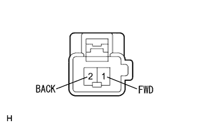
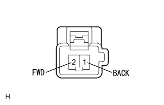

Front Seat Assembly LH (Power Seat Type) Inspection |
| 1. Operation Inspection |
Slide Motor Operation Check
 |
Check that the adjuster operates smoothly when the battery is connected to the slide motor connector terminals.
| Tester connection (terminal symbol) Battery positive (+) - Battery negative (-) | Operating Direction |
|---|---|
| 1(FWD) - 2(BACK) | Slide adjuster forward |
| 2(BACK) - 1(FWD) | Slide adjuster backward |
Reclining Motor Operation Check
 |
Check that the adjuster operates smoothly when the battery is connected to the reclining motor connector terminals.
| Tester connection (terminal symbol) Battery positive (+) - Battery negative (-) | Operating Direction |
|---|---|
| 2(FWD) - 1(BACK) | Back frame forward |
| 1(BACK) - 2(FWD) | Back frame backward |